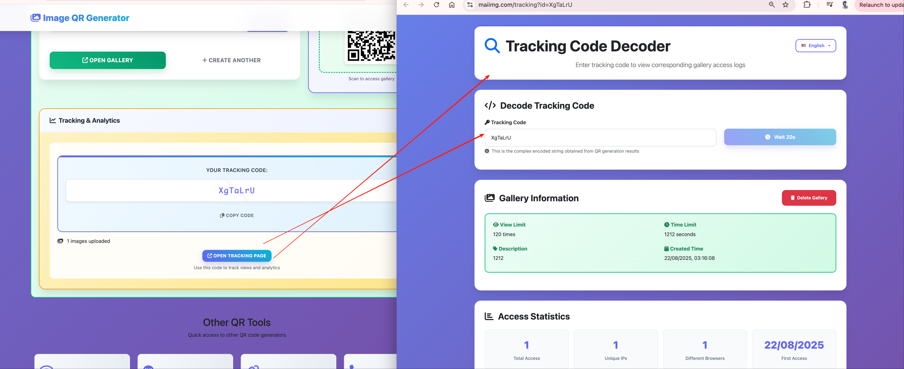

Stage one
Get the share ready before it starts moving
The initial share still needs to be clear and focused. Control becomes much easier when the set itself already has one clean purpose.

In image sharing, the biggest problems are often very basic: the link stays open too long, gets forwarded too far, or keeps working after the job is over. This guide focuses on those practical risks.
It is easier to define the boundary early than to fix a share after it has already moved around.
If the share is tied to a review or a short campaign, the end date should be clear from the start.
Closing an old link is often the cleanest way to stop outdated material from drifting further.
This is not a guide to encryption systems or enterprise policy. It is a guide to the control points the current product actually gives you: open count, expiry, and revoke.
Client reviews, time-sensitive image sets, event shares, short campaigns, and any link that should not stay live forever.
One share supports up to 25 files, so access control works best on smaller, focused sets.
This article does not claim private deployment, AI moderation, or enterprise review systems because those are not confirmed here.
Useful when you want to stop repeated viewing after a certain threshold.
Useful when the share should end after a review cycle, event, or temporary campaign window.
Useful when you need a clear stop instead of hoping the link quietly disappears from use.
Tip: the diagrams and visuals below can be opened in a larger view.
The initial share still needs to be clear and focused. Control becomes much easier when the set itself already has one clean purpose.

This second stage is where privacy problems usually show up. The share is already in motion, so the useful question becomes: should it still be open, and for how long?
That is why control belongs here, not as an afterthought. The link, the QR code, and the later access rules all connect back to this one share.


How many times can it be opened? How long should it stay live? Those two questions solve a lot of practical privacy problems.
If a share should stop, an explicit revoke action is clearer than hoping nobody opens the link again.

Keep the set focused, define the limits early, and close the link when its purpose is over.
Try MaiIMG